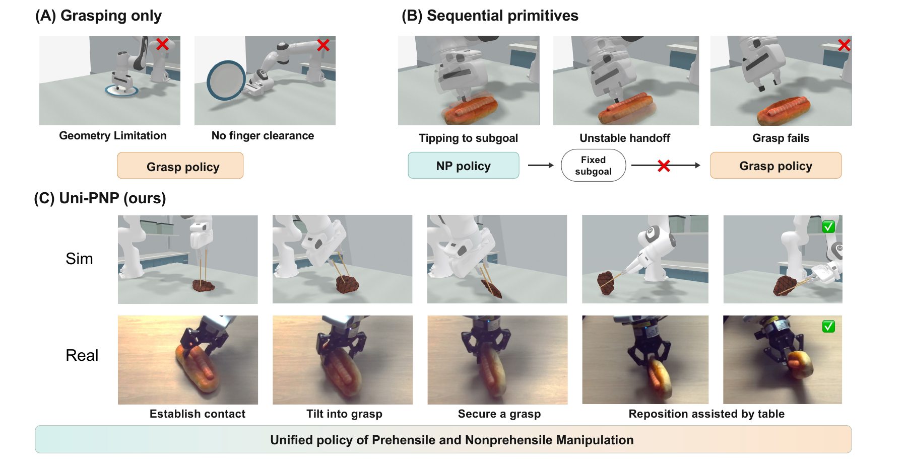
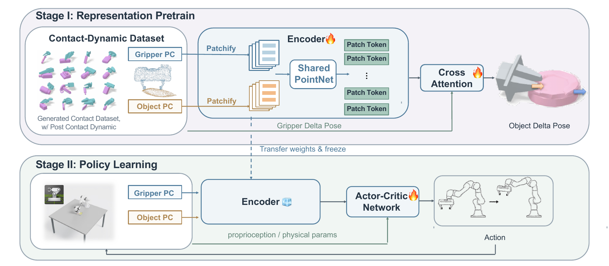
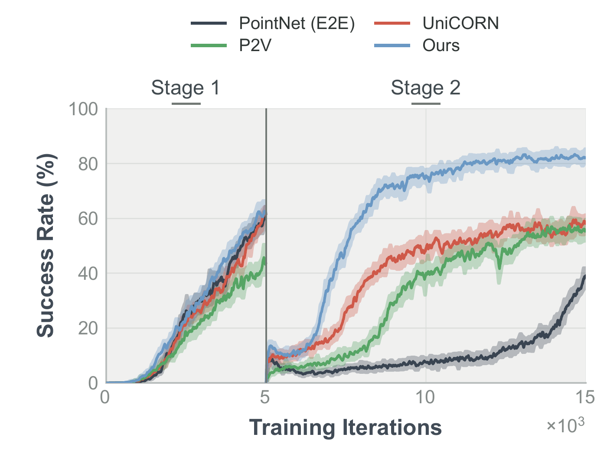

Abstract

Object manipulation often requires combining non-prehensile actions with grasping. However, existing approaches typically develop these capabilities separately and integrate them by sequencing distinct primitives through prescribed intermediate objectives, limiting the coordination of contact motions and grasping. Their integration also remains sensitive to object and gripper geometry and depends on particular environmental supports, complicating real-world deployment. We present Uni-PNP, a unified policy that jointly learns prehensile and non-prehensile manipulation for object pose reaching across diverse objects and grippers. To achieve this, we first pretrain a geometry encoder to predict contact-induced object motion using a contact-dynamics dataset constructed from simulated interactions between diverse objects and grippers. We then train the policy in a two-stage reinforcement learning curriculum from graspable objects to ungraspable peers, encouraging the discovery of non-prehensile interactions and their integration with grasping. Experiments show 76.39% success on hundreds of seen objects with grippers, and 57.91% on unseen peers, outperforming the strongest pose-reaching baseline by 20.52 and 17.79 percentage points, respectively. We also analyze emergent behaviors, including nonprehensile and prehensile repositioning, grasp acquisition that requires grasping after tipping, and table-assisted reorientation while grasping, and transfer to the real-world scenario.
Uni-PNP Methods

We first construct a contact-dynamics dataset from simulated interactions between diverse objects and grippers. A compact geometry encoder is pretrained to predict the object motion induced by gripper actions. The pretrained encoder is then frozen during actor–critic policy learning.
A two-stage reinforcement learning curriculum starts with smaller, readily graspable objects to establish grasping and pose control. Training then introduces challenging initial configurations, encouraging the policy to discover non-prehensile interactions and integrate them with grasping. Teacher–student distillation transfers the simulation-trained policy to the real-world setup.
Experiments
Emergent Manipulation Skills in Simulation
Prehensile repositioning
Non-prehensile repositioning
Grasp acquisition (NP + P)
Table-assisted reorientation (P + NP)
Table-assisted reorientation (P + NP)
Flipping and regrasping
Simulation Trajectories
Real-World Skill Demonstration (2x)
Grasp acquisition
Table-assisted manipulation
Real-World Trajectories (2x)
Quantitative Results in Simulation
| Method | Ungraspable objects | Unseen Objaverse objects | ||
|---|---|---|---|---|
| Training grippers | Panda | Training grippers | Panda | |
| GOMP* | — | 12.33 | — | 11.04 |
| PointNet (E2E) | 37.67 | 19.43 | 37.55 | 16.91 |
| UniCORN (original) | 2.64 | 2.25 | 4.58 | 4.78 |
| UniCORN (retrained) | 55.87 | 42.86 | 50.08 | 40.12 |
| Point2Vec | 50.64 | 34.63 | 46.99 | 32.05 |
| Uni-PNP (ours) | 76.39 | 66.57 | 69.48 | 57.91 |
Uni-PNP achieves 76.39% pose-reaching success on training objects and grippers, and 57.91% on unseen objects with the unseen Panda gripper, exceeding UniCORN (retrained) by 20.52 and 17.79 percentage points, respectively.
Success rate (%). GOMP* evaluates grasping, lifting, and holding; all other methods evaluate object pose reaching. Real-world videos above are qualitative trials.

Contact-dynamics pretraining supports faster policy learning after the curriculum transition at 5,000 iterations. For PointNet, dynamics pretraining achieves 76.39% success compared with 10.89% for contact pretraining.
BibTeX
@misc{unipnp2026,
title={Uni-PNP: Unified Prehensile and Non-prehensile Policy Learning for Generalizable Object Pose Reaching},
author={Wenxuan Zhu and Yuze Wang and Jiangran Lyu and Jiayi Chen and Yixin Zheng and Mi Yan and Li Yi and Zhizheng Zhang and He Wang},
year={2026},
eprint={2610.21735},
archivePrefix={arXiv},
primaryClass={cs.RO},
url={https://arxiv.org/abs/2610.21735},
}